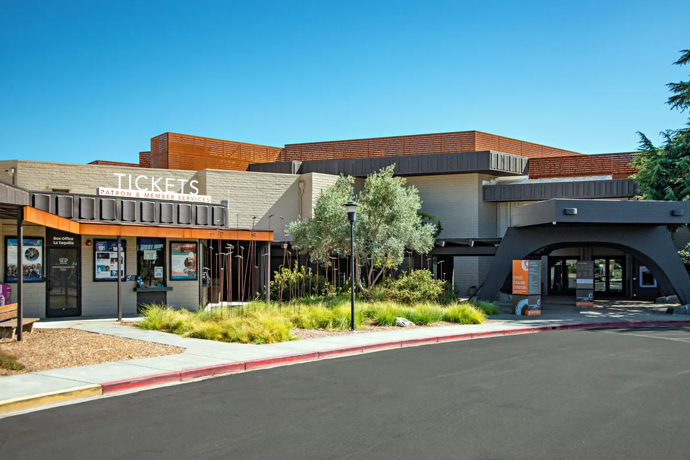

Luther Burbank Center for the Arts is one of Santa Rosa's main performance venues, and from late November to the week before Christmas its calendar fills with holiday music, dance, ballet and family shows. If you are planning a December trip, a night at the theater is an easy way to round out a day of tasting or shopping. Here is the 2026 holiday lineup as listed so far, in date order, with tips on tickets and getting there from downtown.

Late November: comedy and a family matinee
The season starts before the holiday shows do. These are listed for the center's Ruth Finley Person Theater:
- Bored Teachers Comedy Tour: Saturday, November 21, 7:30 pm.
- Sesame Street Live: Elmo's Got the Moves: Tuesday, November 24, 3 pm. A good fit for families in town for Thanksgiving week.
- Brad Williams, The Tall Tales Tour: Sunday, November 29, 7 pm.
Also in Santa Rosa that week, the county events calendar lists An Evening of Alton Brown on Sunday, November 22, at 7:30 pm. Check the venue when you book.
Holiday shows in December
A Celtic Christmas (Thursday, December 3, 7:30 pm). Presented by Pace Live.
Symphony Pops: Home for the Holidays (Sunday, December 6, 3 pm). A Sunday afternoon holiday pops concert in the Ruth Finley Person Theater.
Pink Martini All-Stars Present A Season of Stars (Tuesday, December 8, 7:30 pm).
20th Annual Posada Navideña by Calidanza Dance Company (Friday, December 11, 6:30 pm). Calidanza's annual holiday show is in its 20th year. Free arts and crafts start in the lobby at 5:30 pm, and after the performance there is a posada procession and a community party. Come early with kids.
Nutcracker! Magical Christmas Ballet (Thursday, December 17, 7 pm). The holiday classic, in a single evening performance.
A Magical Cirque Christmas (Friday, December 18, 7:30 pm). Listed for the Ruth Finley Person Theater.
White Christmas (Saturday, December 19, 7:30 pm). Listed for the center's Carston Cabaret.
Dave Koz and Friends: Christmas Tour 2026 (Wednesday, December 23, 7:30 pm). Saxophonist Dave Koz's Christmas tour stops in Santa Rosa two nights before the holiday.
Good to know
- Luther Burbank Center for the Arts is at 50 Mark West Springs Road, Santa Rosa.
- Holiday shows run from December 3 to December 23, 2026.
- Family picks: Sesame Street Live (Nov 24) and the Posada Navideña (Dec 11).
- Buy from the center's own box office to pay face value.
Which night fits your trip
- With kids: Sesame Street Live on the Tuesday before Thanksgiving, or the Posada Navideña on Friday, December 11, when the lobby crafts start an hour before the show.
- A weekend visit: the Sunday matinee of Symphony Pops on December 6, A Magical Cirque Christmas on Friday, December 18, or White Christmas on Saturday, December 19.
- A midweek escape: A Celtic Christmas on a Thursday, Pink Martini All-Stars on a Tuesday or the Nutcracker on a Thursday evening.
- Just before Christmas: Dave Koz and Friends on December 23, if you are in town for the holiday itself.
How to get tickets
Buy directly from Luther Burbank Center's website or box office. Many of these shows also turn up on resale marketplaces, where sellers set their own prices and those prices can run well above face value. If a search result offers tickets for one of these dates, check that it is the center's own site before you pay.
Listings can change. Times above come from the Sonoma County Tourism events calendar and published theater listings as of November 18, 2026, so confirm the time on your ticket.
Getting there from downtown
The center is on Mark West Springs Road in north Santa Rosa, just off Highway 101, a short drive from downtown. Plan dinner downtown first and leave yourself time to park before curtain. Our downtown food guide has ideas for an early dinner, and our holiday winery events guide fills the daytime.
In December, downtown has its own lights too: Winter Lights on Old Courthouse Square starts with the tree lighting on Friday, November 27, from 4 to 7 pm.
Make it a night in Santa Rosa
A show is easier when you do not have to drive home after it. Hotel E is in a historic building on Old Courthouse Square, with an evening happy hour before you head out, valet parking and continental breakfast the next morning. Art House Santa Rosa is a few blocks away on 7th Street. Either one puts you downtown, close to dinner and a short drive from the theater.
Plan your stay downtown
Browse hotels, restaurants, wineries and attractions, all in one place.
Open the directory